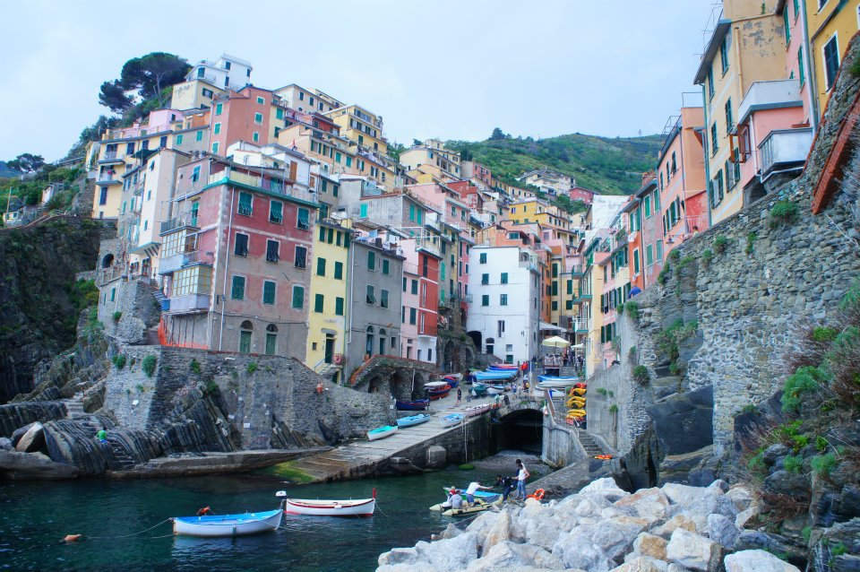
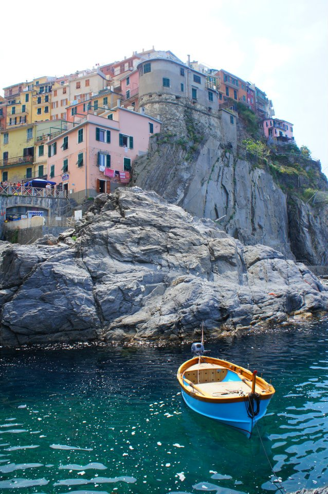
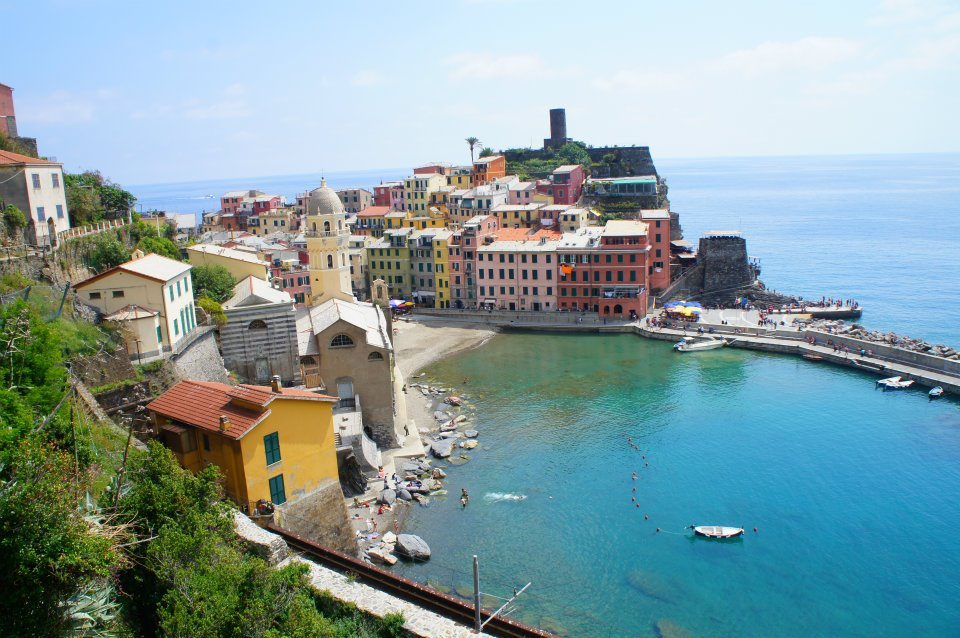

After a two hour train ride from Trevino to La Spezia Centrale, we finally reached the place I was most looking forward to, Cinque Terre, five lands in Italian. It is made up of five villages: Riomaggiore, Manarola, Corneglia, Vernazza, and Monterosso al Mare. Each town is known for different things and each is easily accessible by train, foot, boat, and car. (don’t know details about the car, but everything else I’ve tried) Seriously being here was like living in paradise or walking through a postcard. It was seriously SOOOOOO BEAUTIFUL and is definitely one of my favorite places I have visited in the world.

Riomaggiore
The smallest, but certainly one of the most beautiful, town of the five that comprise Cinque Terre. Riomaggiore has a cute church, Santuario della Madonna di Montenero, that is located on the top of the mountain, that you can hike to in about an hour and a half uphill hike or if you choose to take the bus, it’s a 15 min hike uphill. The view here is AMAZING and well worth the uphill hike you make up the mountain as you can see all of Riomaggiore! So, definitely choose a day when it is clear and not cloudy so you can see the whole town. Also, I’ve heard that the restaurant up there has a delicious anchovie pasta. (anchovies are a specialty in Cinque Terre) There are also a bunch of little shops that you should definitely check out as well as Co-op’s that sell meats, cheeses, fruits, and other necessities. Other than the restaurant near the Santuario, there’s tons of restaurants near the bottom of the mountain. The ones we went to were:
Il Grottino
One of the first restaurants you will see when you exit the walkway from the Train station. This place was recommended by the hostel and it was delicious! I got thegnocchi with shrimpand my friends got thechestnut pasta with clams and pesto. I sort of wished I got the chestnut pasta cause it was so different and delicious but my gnocchi was just as good!
La Grotta Bar and Trattoria
Owned by the same people behind Il Grottino, but just a bit cheaper. I got the pasta with pesto and potatoes which was really good, but just too carby for me. One of our favorites in this town, though, was the Gelateria right next to the bay. It’s probably one of my favorite gelato places I had in all of Italy. Their nutella flavor was definitely the best I had in Italy and the other flavors were just as good. We made a stop here every day we were in Cinque Terre.
Manarola
A 15 min walk across Via dell'Amore and you’ll find yourself in Manarola. Along the way, you’ll have beautiful ocean views and views of the other towns you can visit. Also, on the path, there are areas where couples or people place locks, something I wish I had done. As for Manarola, it’s known for its sciacchetrà which you can try at the multiple restaurants around the town. What we really came to Manarola for was Trattoria dal Billy. This restaurant was AMAZING!!! A little walk uphill and through some alleys, you’ll find yourself on the mountainside at this little restaurant that has amazing ocean views and super fresh seafood. Highlights of the meal were the balsamic vinegar(probably the BEST I HAVE EVER HAD IN MY ENTIRE LIFE), my shrimp with asparagus pasta, the shrimp with tomato sauce pasta and the biscotti. They catch the seafood here every day so their specials change accordingly. Definitely somewhere you HAVE TO COME TO if you’re in town.
Corniglia
Because there was rain a few days before, the regular route you would hike through to get to Corniglia from Manarola was closed. We took an alternate route, uphill. And I mean UPHILL ALL THE WAY. Basically you hike up the mountainside, to a small village, and then make your way down to Corniglia. The views from this trail are amazing though and I’d have to say it was completely worth it! Just make sure you bring lots of water and allot yourself around 1.5 to 2 hours to make the hike, maybe more because you’ll want to take pictures of all the pretty views and greenery you see. To get to Corniglia, if you don’t take the route I mention, from the regular route, you have to walk up 365 steps to get to the main town. My friends and I only browsed around before trying to get to a secret beach mentioned in a New York Times article we found but eventually gave up and went back home.
Vernazza
One of the most beautiful towns in Cinque Terre in my opinion (my picture of Vernazza is my background on just about everything). Anyways, the only sad thing about Vernazza is that there was a flood that occurred in October 2011 that really damaged the city. So, there’s a lot of construction going on in the town, but don’t let that bother you. Once you get closer to the water, the more beautiful the town gets. There are tons of restaurants here also, but my friends and I decided to forgo our meal and make our way to Monterosso. Oh, but word of advice, definitely make the hike from here to Monterosso because the trail takes you up the mountainside where you can get AMAZING views of Vernazza.
Monterosso
The only town in Cinque Terre with sandy beaches. After a nice hike of about 1 to 1.5 hours, the best thing to do is to come here and lay on the beach and take a swim in the ocean. I’d say this is the most “developed” town in Cinque Terre, with hotels, restaurants, and parks. Also, if you want to spend the money, there’s a beach that only paying individuals can go on where they can lay under colored umbrellas or cabanas. My friends and I decided to just go to the beach right next to this area, for free. Oh, and if you walk along the beach, you’ll see this HUMONGOUS house(?) that looks as though it is being held up by a man…definitely go check it out.
Seriously, Cinque Terre is probably one of my favorite places in the whole entire world. It’s so beautiful and serene and calm…I just want to go back. Word of advice, before you come here, bring sneakers! You will be hiking…I made my way through the towns in my Tom’s….
.